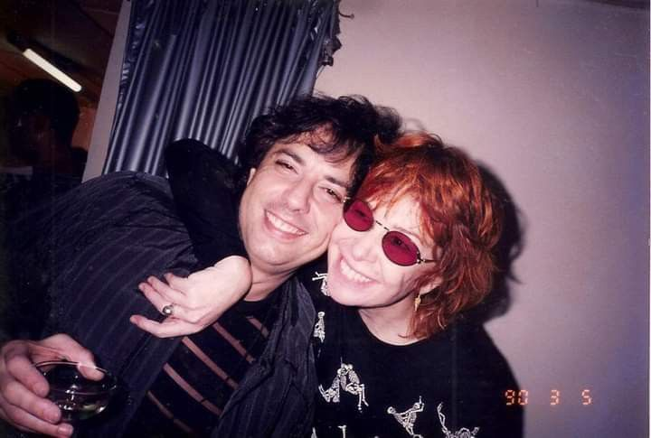

Rita Lee: Uma autobiografia
Autor: Rita Lee
Editora: Globo Livros
R$ 48, 68

“Nunca fui um bom exemplo, mas sou gente fina”
Rita Lee Jones (1947-2023) foi uma cantora, compositora e musicista brasileira. Considerada como a "Rainha do Rock Brasileiro", é uma das figuras mais influentes da história da música brasileira.
Ela nasceu em São Paulo no dia 31 de dezembro de 1947, em São Paulo, Brasil. Filha do dentista Charles Fenley Jones, um imigrante americano, e da pianista Romilda Pádua Jones, começou a tocar bateria com quinze anos de idade. Ela ganhou destaque como vocalista da banda de rock Os Mutantes no final dos anos 1960. Os Mutantes eram conhecidos por seu som experimental e psicodélico, e estavam na vanguarda do movimento Tropicália, que combinava elementos de rock, pop e música tradicional brasileira.
Depois de deixar Os Mutantes em 1972, Rita Lee embarcou em uma carreira solo de sucesso
Quando era criança, Rita Lee teve aulas de piano, mas foi na adolescência que realmente passou a ter interesse na música. Também nessa época começou a compor suas primeiras canções. Assim como vários jovens da década de 1960, Rita Lee gostava de bandas de rock internacionais como The Beatles e Rolling Stones.

Ela lançou vários álbuns ao longo dos anos 1970 e 1980, explorando vários estilos musicais como rock, pop e MPB (Música Popular Brasileira). A cantora era adepta do veganismo. Teve opiniões contundentes e costumava expressá-las bem nas suas entrevistas. Foi defensora dos animais e dos direitos das mulheres. Ela também gostava de se expressar por meio de suas redes sociais.
A artista resolveu aposentar-se dos palcos em 2012, anunciando que estava com problemas de saúde. Na época, a cantora chegou a afirmar em uma rede social: “me aposento dos shows, mas da música nunca”. Entretanto, um ano depois, chegou a participar de shows, como o que foi realizado em comemoração aos 459 anos da cidade de São Paulo.
Em 2021, a cantora revelou que estava com câncer de pulmão. Fez o tratamento e, no ano seguinte, anunciou estar curada, mas dia 8 de maio de 2023 Rita Lee morreu em sua casa, ao lado da família.Discografia
Álbuns:
Shopping